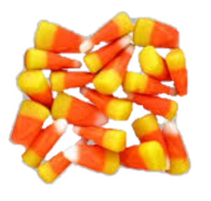

Candy corn 10/5/2020
Since Halloween is nearing, I decided to write about a well-known Halloween treat: candy corn!
Candy corn is one of my favourite Halloween candies. They are generic, easy to make, and lastly,
they are delicious! If you haven’t tried candy corn before, you should! It is a treat with a simple
flavour and pleasant, waxy texture.
If you didn’t know, candy corn originated in Philadelphia during the 1880s. The candy which was
first introduced by a candymaker, George Renninger, is now an iconic festive treat. One of the things
I love about candy corn is that it is easy to carry around, and having a few will leave a lingering taste
in your mouth.

I’ve noticed that you can find candy corn almost anywhere. “The National Retail Federation estimated that
95% of holiday shoppers will be stocking up on the tri-coloured treat.”, Sara Broek, BHG. I’ve seen candy
corn at grocery stores, convenience stores, and you can probably pick some up at your local farmer’s market.
The next time you go shopping, look out for candy corn.
Now, you may be wondering, what is candy corn made of? Candy corn is made from fondant, corn syrup, vanilla flavour,
marshmallow creme, and sugar. The mixture is poured into moulds and cooled, and eventually turned into delicious, sparkling
treats. Candy corn is the type of treat you either hate or love just like licorice.
Candy corn is in stock right now, so I recommend you to go buy some!
Sources: Sara Broek, "The History of Candy Corn: A Halloween Candy Favourite", BHG 2020. Accessed Oct 8 2020.
Anon, "candycorn", Google Images. Accessed Oct 5 2020.